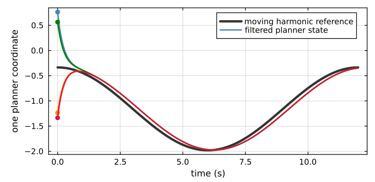

Tikhonov Harmonic Tracking
A harmonic extension answers a static question exactly:
\[Hq^\star(t)=-Bp(t).\]
Given the targets $p(t)$, it returns the globally coordinated agent state $q^\star(t)$. A layered controller needs one more object: a planner state whose transient, bandwidth, and disturbances can be composed with the physical agents below it. This feature realizes the algebraic answer as
\[\boxed{\epsilon\dot x=-x+q^\star(t)}, \qquad \epsilon>0.\]
The distinction is small in code and load-bearing in analysis. It exposes the boundary layer required by Tikhonov's theorem, quantifies the lag produced by a moving target, and identifies the exact feedforward signal that removes that lag without changing the sheaf, harmonic objective, or local controllers.

The black curve is one coordinate of $q^\star(t)$. The colored planner states begin at four different values, collapse onto the same response, and then follow the moving reference with the same small delay.
The operational motivation
Writing $q=q^\star(t)$ silently assumes an infinitely fast computation and an infinitely fast delivery channel. That idealization is useful for designing the formation, but it leaves no dynamical subsystem to which an ISS cascade theorem can be applied. It also hides which layer is responsible when physical agents trail a moving target.
The normalized filter makes that missing layer explicit while preserving a strict separation of responsibilities:
- the sheaf and distributed solve decide what coordinated state is desired;
- the Tikhonov state decides how that reference is delivered in time;
- each onboard controller decides how its own dynamics track the delivered reference.
Communication remains isolated inside the harmonic solve. Once agent $i$ receives its block $x_i$, its execution loop needs no global formation state. The same planner output can therefore drive different locally stabilized agent dynamics without reopening the global coordination loop.
For an agent: the fleet computes your slot using the sheaf. The Tikhonov layer delivers that slot as a causal signal. Your onboard controller only sees your own reference and stabilizes your own tracking error.
Claims and evidence
| claim | derivation or evidence |
|---|---|
| The filter has the harmonic extension as its reduced manifold | The harmonic manifold |
| Its frozen boundary layer is globally exponentially stable with rate $1/\epsilon$ | Boundary-layer stability and ISS |
| Moving-reference lag is $O(\epsilon)$ | ISS bound and epsilon sweep |
| $q^\star+\epsilon\dot q^\star$ cancels first-order lag | Analytic feedforward |
| The same planner composes with different local dynamics | Complete tracking scenarios |
| The implementation is stable for arbitrarily small positive $\epsilon$ | Exact sampled update |
Numerical evidence
The stability and scaling pages use a fixed harmonic system so that $\epsilon$ and derivative feedforward can be isolated cleanly. The complete tracking scenarios then run the repository's existing 13-agent, four-target environment end to end. Its targets, harmonic references, filtered references, controls, and physical states are all produced by the implemented pipeline and recorded before plotting.
What is deliberately not hidden
The clean result assumes fixed topology and a differentiable target reference. A changing graph changes $H$ and requires a new or updated factorization. Noisy target velocity reappears as a bounded feedforward disturbance. Actuator saturation and safety constraints belong to the local execution layer and require their own feasibility and stability arguments.
Those are not defects in the construction. They are the layer boundaries that make the result compositional.